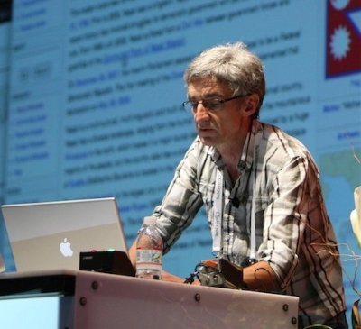
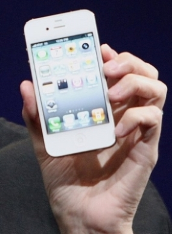

Retour a l'index
Page suivante
Le nom de Jean-Marie Hullot est très peu connu pourtant ses création dans l'informatique et la programmation sont assez célèbre parmi ses compères.
Il créa notamment SOS interface qui fut le premier éditeur interactif d'interface graphique , ce programme deviendra Interface Builder pour NeXTSTEP
NeXTSTEP ou NeXT est une entreprise qui développait et construisait une série d'ordinateur destiné à l'enseignement supérieur qui fut fondé en 1985 par nul autre que Steve Jobs après sa démission forcé d'Apple. Hullot rejoint NeXT en 1996.
NeXT fut racheté en décembre 1996 par Apple pour 429 millions de dollars et Steve Jobs réintégra la société et Jean-Marie Hullot le suivit .


Puis Hullot fit évoluer Interface Builder en Mac OS X un système d’exploitation développé et commercialisé par Apple et dont les version supérieur sont encore utilisé a ce jours.
En 2001 Hullot souffla a Steve Jobs (qui était entre temps revenu a la tête de la firme ) l'idée de smartphone . Alors il acquit le poste de directeur technique du service des application à Apple inc. dans une cellule secrète parisienne chargé de créer le premier Iphone . A ce poste il travailla notamment sur la réplication et la synchronisation de donné entre tout sorte d'objet connecté autrement dit l’ancêtre du cloud.
Comme dit précédement, hullot ne voulant pas quitté la France, démissione après que Apple ne décide de centralisé les développement de l'Iphone aux États-Unis a la Silicon Valley. De plus Hullot expliqua plus tard dans une interview de l'INRIA que son travaille était presque achevé.
Le premier Iphone sortit 2 ans plus tard en 2007.Pour une petite anecdote